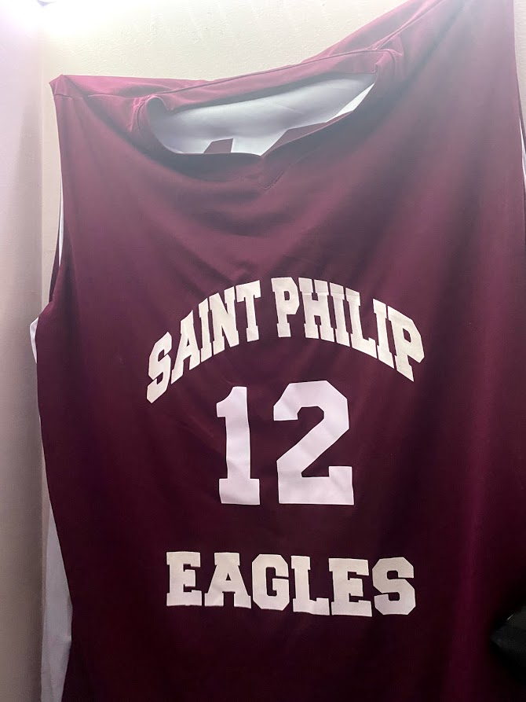
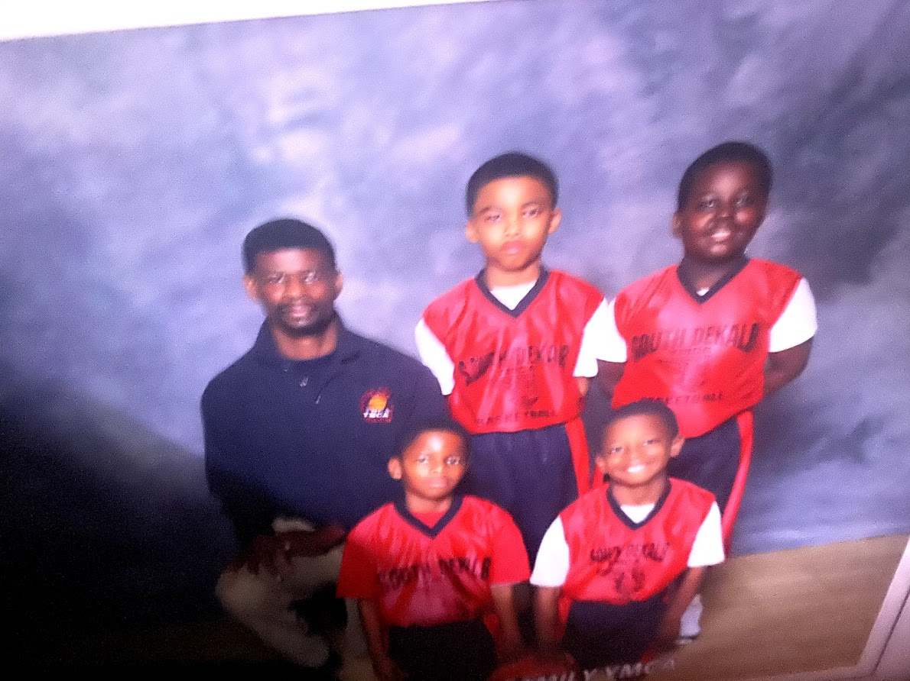

Basketball
 For years growing up, basketball was my sport of choice. However, I'm not sure why. I was not great at all; and when I was finally old enough to realize that I was “riding the bench”, I gave up on the sport.
For years growing up, basketball was my sport of choice. However, I'm not sure why. I was not great at all; and when I was finally old enough to realize that I was “riding the bench”, I gave up on the sport.
I began playing football in middle school. Sadly, I began tryouts for the middle school football team three days late; so of course, I didn't get picked. Out of spite, I joined a local recreational football team. I played a more active role on the team than I did playing basketball; but once again, I was not good, nor was the rest of the team. Just as my former basketball teams, we lost almost every game. Ultimately, I was happy for the experience; but, after that season, I solely returned to the football field dressed in a marching band uniform, toting a sousaphone.
Golf... Finally, a sport that I was good at. I began playing golf junior year of Highschool. I was following in the footsteps of a previous leader in our band program. I remember thinking that I was preparing for retirement in advance; so that when all of my friends were ready to retire and relax on golf courses, I would finally have a sport that I could best them in. Talk about thinking ahead right? During senior year, I began taking the sport more seriously, even going as far as investing $200 of not so easily earned money in private lessons. 3 lessons later, I had still yet to win a match; but I still managed to place top 20 in my county tournament. This was a huge achievement to me, as it proved that no matter the task, with my work ethic, anything that I wanted to build proficiency in was in reach.